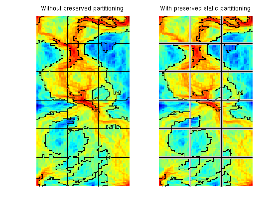
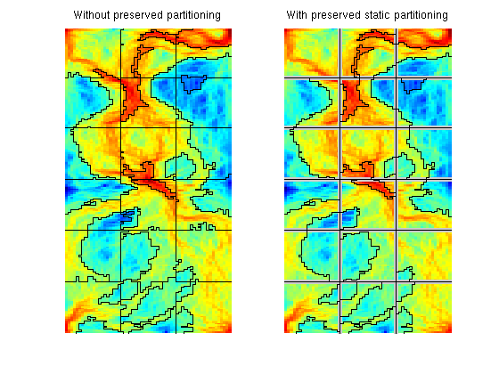
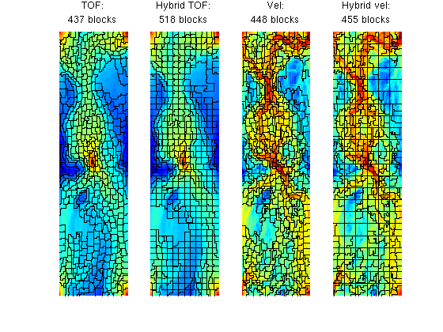

Example 5: Hybrid Grids
In this example we discuss how to combine flow adaption with a regular partition, which can be done in several ways.
References:
- V. L. Hauge, K.-A. Lie, J. R. Natvig, Grid coarsening based on amalgamation for multi-fidelity transport solvers, September 2010, http://www.sintef.no/Projectweb/GeoScale/Publications/
Contents
Set up and solve flow problem
As our example, we consider a standard five spot with heterogeneity sampled from Model 2 of the 10th SPE Comparative Solution Project.
try require spe10 catch me mrstModule add spe10; end try require gridtools catch me mrstModule add gridtools; end try require coarsegrid catch me mrstModule add coarsegrid; end [G, W, rock] = SPE10_setup(25); rock.poro = max(rock.poro, 1e-4); fluid = initSingleFluid('mu', 1*centi*poise, 'rho', 1014*kilogram/meter^3); rS = initState(G, W, 0); S = computeMimeticIP(G, rock); rS = solveIncompFlow(rS, G, S, fluid, 'wells', W);
Compute flow indicators based on velocity and time-of-flight
iK = log10(rock.perm(:,1)); iK = iK - min(iK) + 1; v = faceFlux2cellVelocity(G, rS.flux); v = sqrt(sum(v .^ 2, 2)); iV = log10(v); iV = iV - min(iV) + 1; T = computeTimeOfFlight(rS, G, rock, 'wells', W); Tr = computeTimeOfFlight(rS, G, rock, 'wells', W, 'reverse', true); iT = -log10(T.*Tr); iT = iT - min(iT) + 1;
Combine a Uniform and a Flow-Based Partition
As our first example of a hybrid grid we will combine a uniform partition with a segmentation based on velocities. The two partitions are generated independently and then merged using the builtin 'unique' function (which may be expensive for very large grids). Afterwards, we process the partition to check for disconnected blocks that need to be split.
clf p1 = segmentIndicator(G, iV, 4); pS = partitionUI(G, [3,6,1]); [b, i, p] = unique([pS, p1], 'rows'); %#ok<*ASGLU> p = processPartition(G, p); subplot(1,3,1), title('Segmented') plotCellData(G,iV), outlineCoarseGrid(G,p1); axis equal tight off subplot(1,3,2), title('Static') plotCellData(G,iV), outlineCoarseGrid(G,pS); axis equal tight off subplot(1,3,3), title('Combined') plotCellData(G,iV), outlineCoarseGrid(G,p); axis equal tight off

If the a priori partitioning should be preserved throughout the coarsening, we specify it in the option 'static_partition' in the call to mergeBlocks. Then the interfaces in this partitioning will not be crossed.
p1 = mergeBlocks(p, G, iV, iV, 30);
p2 = mergeBlocks(p, G, iV, iV, 30, 'static_partition', pS);
We then plot the result to confirm that the uniform partition is preserved in p2.
clf; subplot(1,2,1); plotCellData(G, iV); h1 = outlineCoarseGrid(G, p1); axis equal tight off; title('Without preserved partitioning'); subplot(1,2,2); plotCellData(G, iV); outlineCoarseGrid(G, pS,'EdgeColor',[.8 .8 .8],'LineWidth',4); h2 = outlineCoarseGrid(G, p2); axis equal tight off; title('With preserved static partitioning');
Both partitions would typically be used as input to further refinement and merging steps. If not, we should get grid of all blocks that are confined within another block.
delete([h1, h2]) subplot(1,2,1), [blks, p1] = findConfinedBlocks(G,p1); outlineCoarseGrid(G, p1); subplot(1,2,2), [blks, p2] = findConfinedBlocks(G,p2); outlineCoarseGrid(G, p2);
Compare Uniform, NUC, and Hybrid Grids
In the next example, we compare three different algorithms
- the standard NUC algorithm with time-of-flight and velocity indicator
- the combination of a Cartesian partition with a NUC partition based upon the time-of-flight indicator
- the combination of a static coarse Cartesian partition and a NUC partition based upon the velocity indicator
The parameters in the methods are chose so that the number of coarse blocks should be somewhat lower than the 528 blocks in a 12 x 44 uniform Cartesian partition.
clf cgDims = [12 44 1]; NB = prod(bsxfun(@rdivide, G.cartDims, cgDims)); NL = .5*NB; NU = 1.1*NB; pu = partitionUI(G, cgDims); pt = segmentIndicator(G, iT, 12); p = mergeBlocks(pt, G, rock.poro, iT, NL); p = refineBlocks(p, G, iT, NU, @refineGreedy2); p = mergeBlocks(p, G, rock.poro, iT, NL); subplot(1,4,1) plotCellData(G, iT), outlineCoarseGrid(G,p); axis tight off, title(sprintf('TOF:\n%d blocks', max(p))); [b,j,p] = unique([pt, pu], 'rows'); p = processPartition(G, p); p = mergeBlocks(p, G, rock.poro, iT, NL); p = refineBlocks(p, G, iT, NU, @refineGreedy2); p = mergeBlocks(p, G, rock.poro, iT, NL); subplot(1,4,2) plotCellData(G, iT), outlineCoarseGrid(G,p); axis tight off, title(sprintf('Hybrid TOF:\n%d blocks', max(p))); pv = segmentIndicator(G, iV, 10); p = mergeBlocks(pv, G, rock.poro, iT, NL); p = refineBlocks(p, G, iT, NU, @refineGreedy2); p = mergeBlocks(p, G, rock.poro, iT, NL); subplot(1,4,3) plotCellData(G, iV), outlineCoarseGrid(G,p); axis tight off, title(sprintf('Vel:\n%d blocks', max(p))); ps = partitionUI(G, [6 22 1]); [b,j,p] = unique([pv, ps], 'rows'); p = processPartition(G, p); p = mergeBlocks(p, G, rock.poro, iV, NL); p = refineBlocks(p, G, iV, NU, @refineGreedy3); p = mergeBlocks(p, G, rock.poro, iV, NL, 'static_partition', ps); subplot(1,4,4) plotCellData(G, iV), outlineCoarseGrid(G,p); axis tight off, title(sprintf('Hybrid vel:\n%d blocks', max(p)));
Comparing the two time-of-flight grids, we see that the hybrid approach ensures that the blocks are more regular in regions of low flow. Comparing the hybrid time-of-flight and the hybrid velocity grid, we see that the latter has regular coarse blocks in all zones of low flow because of the static 6x22 partition.